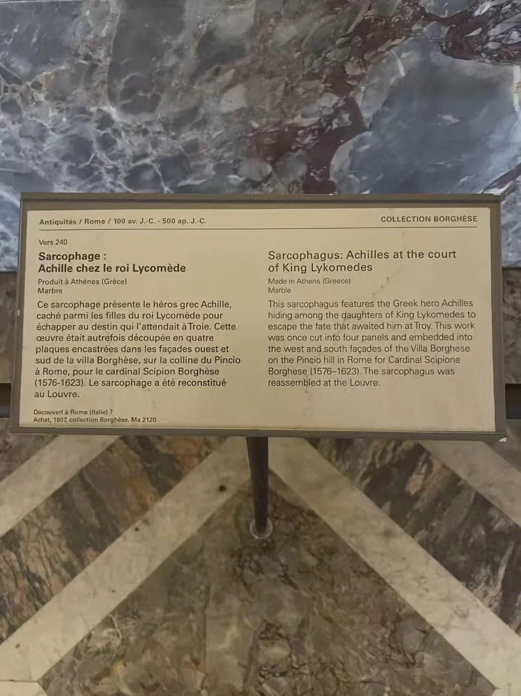

ROMAN SARCOPHAGI / R05
阿喀琉斯在斯基罗斯石棺
阿喀琉斯在女子之间显露英雄身份，强烈的转身让叙事集中到中央。

- 年代
- 约240年
- 材料
- 大理石（可能为彭特利科斯大理石）
- 收藏
- 卢浮宫
- 观看地点
- 卢浮宫 · 巴黎
- 馆藏号
- Ma 2120
- 制作地区
- 阿提卡
- 发现地记录
- 意大利（馆方目录）
从隐匿到拿起武器
阿喀琉斯藏身斯基罗斯宫廷的故事，在正面变成一群被突发动静牵引的人物。中央裸体青年持圆盾，周围女子的身体与衣褶向两侧转开。卢浮宫目录还辨认出两侧的国王与战士；侧面继续表现奏乐及武装场景，同一英雄的经历随着棺身转折。 [6]
阿提卡制作，意大利发现
馆方将这件约240年的石棺归为阿提卡制作，发现地则记为意大利。这个区别提醒我们，观看城市、制作地区与后来流传并不重合。目录也记录背面曾被重新雕刻、增添人物，现状保留了后世整理古物的痕迹。 [6]
现场展签 · 1张

资料与来源
断代、收藏与文献说明
材料主项为大理石；馆方对彭特利科斯石材产地加有问号。背面的人物并非全部保持古代原状。 [6]